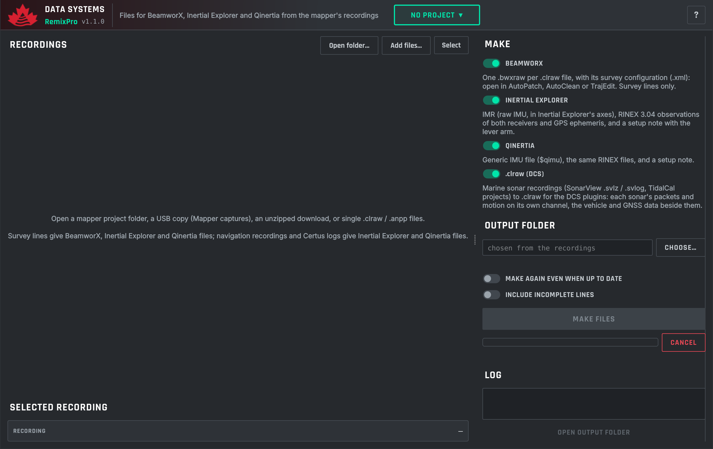
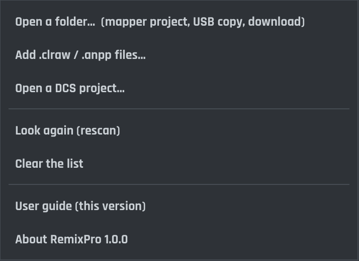
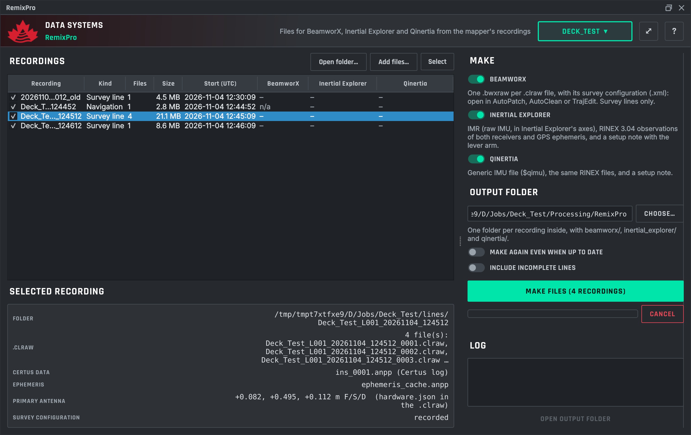
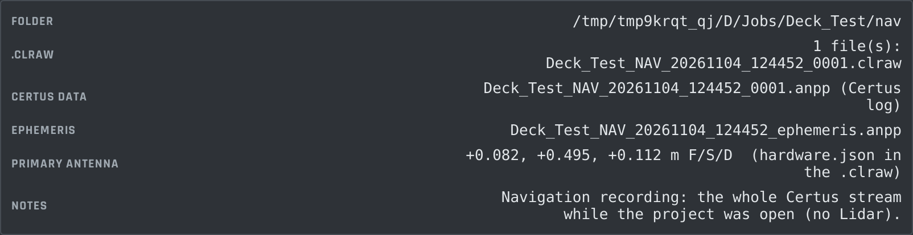
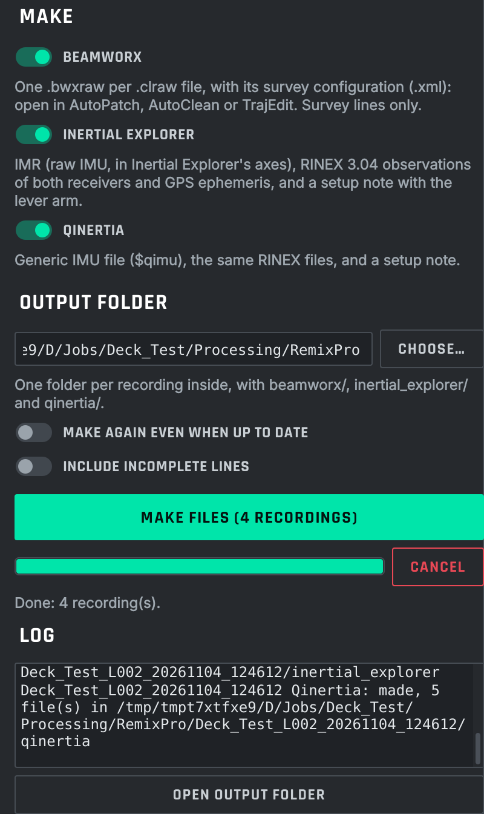
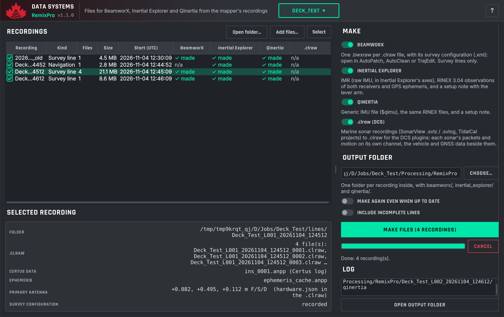

RemixPro makes the files that other programs read from the mapper's recordings, on the office PC, and turns the survey boat's sonar recordings into .clraw for the DCS plugins (chapter Sonar recordings to .clraw):
| Output | Files | Made from |
|---|---|---|
| BeamworX | One .bwxraw per .clraw file, with the same name, and its survey configuration .xml beside it. They open in AutoPatch, AutoClean (Raw Import) and TrajEdit (Create From Raw). | Survey lines |
| Inertial Explorer | IMR raw IMU file in Inertial Explorer's axes, RINEX 3.04 observations (.obs, the second receiver as _rx2.obs), GPS ephemeris (.nav), and a setup note with the lever arm. | Survey lines, navigation recordings, Certus logs |
| Qinertia | Generic IMU file (_imu.qimu), the same RINEX files, and a setup note. | Survey lines, navigation recordings, Certus logs |
Up to version 2.9.1 the mapper made these files itself. From 2.10 it records only, so the unit spends no time on conversions, and RemixPro makes them. RemixPro uses the mapper's own writers, so its files are the same byte for byte as the ones the mapper made. The only difference is the program name in the IMR header and in the RINEX header, which now says RemixPro.
RemixPro is a side tool of the Data Collection Systems plugins, not a stage of the PosPro → AlignPro → CloudPro chain. It reads the raw recordings only, finalizes nothing to the other plugins, and changes nothing in a DCS project apart from its own output folder. The order in which you use it with the other plugins does not matter.
https://canadian-lidar.github.io/qgis-plugins/plugins.xml), install or upgrade DCS Core first and RemixPro after it.dcs_core-{CORE_VERSION}.zip first, then remixpro-{VERSION}.zip.
The window has the same header and the same kind of window as the other DCS plugins: logo and name on the left, then the project box, and the ? guide button on the right. Because RemixPro is not a stage of the chain, its header has no PosPro › AlignPro › CloudPro breadcrumbs.
RemixPro opens as a window of its own; use the system's title bar to move, maximise or close it (it does not dock into QGIS). RemixPro remembers its place and size, also after QGIS restarts.
The window has three parts:

Use Open folder… (also in the project box) for a folder, or Add files… for single files. RemixPro looks through the folder and everything inside it. It accepts every form in which the mapper hands recordings over:
| What you open | Example |
|---|---|
| A mapper project folder, or any folder inside it | Deck_Test/, Deck_Test/lines/, Deck_Test/nav/, a line folder |
| A USB copy | E:\Mapper captures\Deck_Test\ or the whole Mapper captures folder |
| An unzipped download | a line (Deck_Test_L003.zip) or a whole project (Deck_Test.zip) |
| Captures from before 2.10 | 20261020_141210_test/, also when grouped into a project's lines/ |
| Single files | a .clraw or an .anpp |
| A DCS project | Open a DCS project… in the project box: the job's recordings, with outputs inside the project (below) |

lines/, the project's navigation recording and two survey lines, in recording order. The first line is split over four .clraw files and is one row.Each row is one recording:
| Kind | What it is | Outputs |
|---|---|---|
| Survey line | One Start/Stop on the mapper: its .clraw files (Lidar and Certus), however many there are. | BeamworX, Inertial Explorer, Qinertia |
| Navigation | The whole Certus stream while a project was open (<Project>_NAV_…). It has no Lidar data, so BeamworX shows n/a. It is useful for full-day trajectories that cover every line. | Inertial Explorer, Qinertia |
| Certus log | An .anpp file with no .clraw beside it, for example a capture from before mapper 2.8. | Inertial Explorer, Qinertia |
Lines are recognised from the information recorded inside each file, never from file names, exactly as in PosPro, AlignPro and CloudPro. So a line split over several files is one row, and old and new folder names can be mixed. Hidden files (.mapper-mirror.json), unfinished files (*.partial), Processing folders and the mapper's own older conversions are skipped.
The mapper copies lines to a USB drive while it records. A 2.10 line counts as complete once its continuity.json and manifest.sha256 are there. A line without them is shown in amber as (incomplete), is not ticked, and is skipped unless you tick Include incomplete lines. Then only the files that are already finished are converted. Open the folder again (Look again in the project box) when the copy has finished.
The panel under the list shows the details of the highlighted row:
.clraw files;.anpp) when it is there, as the mapper did. Otherwise it uses the Certus packets recorded inside the .clraw.ephemeris_cache.anpp, <line>_ephemeris.anpp in a download, or <Project>_NAV_…_ephemeris.anpp). Without it the RINEX navigation file has only the ephemerides the Certus sent during the recording.hardware.json recorded in the .clraw, else from the line's session.json. Amber when no lever arm was recorded (a single .anpp, say)..clraw carries the BeamworX survey configuration. Every survey line from the mapper does. Otherwise it is built from hardware.json.


Each output folder holds a small note, .made_from.json, recording what it was made from: the file names and sizes, the lever arm, the ephemeris and the RemixPro version. When those still match, the list shows ✓ made and Make files skips the output straight away. When a recording changed (for example, a line copied in full after a first look) the list shows out of date and the output is made again. Make again even when up to date remakes everything ticked.
Cancel stops the recording being converted. Each output is written to a work folder and moved into place only when it is complete, so a cancel (or an error) leaves the earlier result, or nothing, and never half a set. Recordings already finished stay finished. If one recording fails, the others still run, and the log says why it failed.
The default output folder:
Processing/<Name>/RemixPro/, inside the project, beside 01_PosPro and the other stages;<Project>/Processing/RemixPro/;RemixPro folder beside what you opened.Inside it there is one folder per recording:
RemixPro/
Deck_Test_L001_20261104_124512/
beamworx/ Deck_Test_L001_20261104_124512_0001.bwxraw + .xml, _0002 …
inertial_explorer/ Deck_Test_L001_20261104_124512.imr, .obs, _rx2.obs, .nav,
README_INERTIAL_EXPLORER.txt
qinertia/ Deck_Test_L001_20261104_124512_imu.qimu, .obs, _rx2.obs, .nav,
README_QINERTIA.txt
Deck_Test_NAV_20261104_124452/
inertial_explorer/ qinertia/
RemixPro refuses an output folder that is the folder holding the recording itself. Open output folder opens it in your file manager.
Each .bwxraw is laid out as NavAQ writes it: the survey configuration, three seconds of navigation before the file's first Lidar data (run-in), all data, and three seconds of navigation after its end (run-out). Each file can therefore be processed on its own. The survey configuration carries the lever arms, the Lidar mounting angles in the NavAQ convention and the coordinate system recorded on the mapper. Open the files in AutoPatch, AutoClean (Raw Import) or TrajEdit (Create From Raw). A damaged chunk of a .clraw costs that chunk only, about one second, and the log reports it.
Follow README_INERTIAL_EXPLORER.txt. In short: convert the .obs to GPB (receiver type RINEX), add the rover GPB, the base station and the .imr as the IMU file, and enter the lever arm given in the note in Inertial Explorer's own axes.
Follow README_QINERTIA.txt: import the _imu.qimu as a Generic IMU file (GPS time), and the RINEX observation and navigation files. Qinertia uses the vehicle frame as it is (X forward, Y right, Z down), so its lever arms are the mapper's values unchanged.
RemixPro also converts the other way, for the survey boat: SonarView recordings (.svlz or .svlog) and CLAM TidalCal projects become .clraw files (kind sonar) that the DCS plugins read. Nothing is decoded away: every packet SonarView recorded is kept exactly as it was, and each sonar gets its own channel, including its own motion sensor (packets 504 and 505). The vehicle data SonarView recorded (MAVLink, NMEA) and the GNSS receiver's files go in beside them.
sonar_offsets.json beside the recordings (or up to three folders above, or in the TidalCal project; {"1": [F, S, D], "2": [F, S, D]} by SonarView device id, or "port" / "starboard"); the Mount Offset entered in SonarView (Offsets › Mount Offset X, Y, Z = forward, starboard, down), as recorded in the session; a TidalCal project's vessel table. The details show each sonar's offsets and where they came from. Enter them in SonarView before recording and nothing else is needed.Rover/ and Base/ beside Sonar/, a TidalCal project's 02_GNSS_Rover_Base), and inside Emlid's download zips, which do not need unzipping. Files with base in their folder, zip or file name are the base station's; the others the rover's. Only the files whose times cover the recording are taken in: rover and base RINEX observations (cut to the recording ± 10 minutes), navigation RINEX, and the rover's .LLH log and .pos solution (lines within ± 60 s; their GPS time is taken back to UTC). The base's own .LLH is its fixed position and is never used as the boat's.2026-10-07-16-04.svlz, 2026-10-07-16-04-1.svlz, … RemixPro converts them as one recording. When an earlier part is not there, the details say which one; what is there is converted.<recording>/clraw/ inside the output folder, split at 2 GB.The format, and what PosPro, AlignPro and CloudPro will do with it, is described in the project document dcs/marine-clraw.md. In this version the three plugins do not process sonar recordings yet; they leave them out of their line lists. PosPro's trajectory for the boat is next.
The same conversions run without QGIS, for batches or a scheduled job. From the QGIS plugins folder (the one holding RemixPro and dcs_core), with a Python that has numpy (the one installed with QGIS has it):
python -m RemixPro.cli "E:\Mapper captures\Deck_Test" --list python -m RemixPro.cli "E:\Mapper captures\Deck_Test" --ie --qinertia --out D:\Jobs\Deck_Test\Exports
--clraw converts sonar recordings to .clraw. Without --beamworx, --ie, --qinertia or --clraw everything each recording allows is made. --force makes the outputs again even when they are up to date, and --include-incomplete converts lines that are still being copied. The exit code is 1 when a recording failed.
| What you see | What it means |
|---|---|
| A recording is missing from the list | Its files are .partial (still being written), inside a Processing folder, or hidden. A line whose .clraw was not copied shows as a Certus log if its .anpp is there. |
| (incomplete) in amber | The line is still being recorded or copied. See Lines that are not complete. |
| out of date | The recording changed since the output was made. Make it again. |
| BeamworX n/a | A navigation recording or a Certus log has no Lidar data. |
| “No antenna lever arm recorded” | The input carries none (a single .anpp, say). Enter the lever arm in the processing software; the measured values are in the note. |
| “IMU samples … before the Certus knew the time were left out” | Normal at power-on: the Certus stamps samples 2013 until it has GNSS time. |